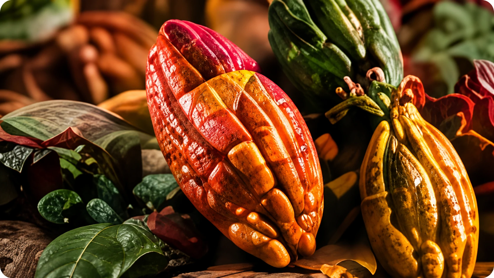
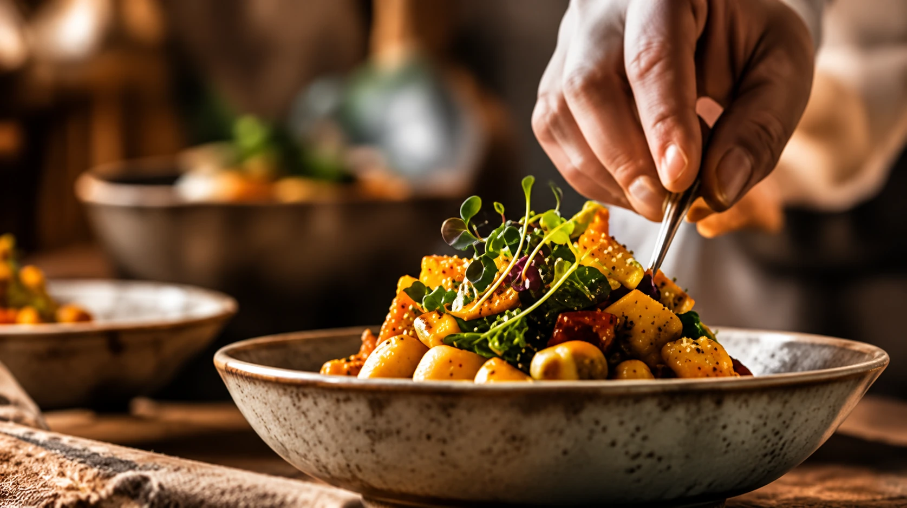
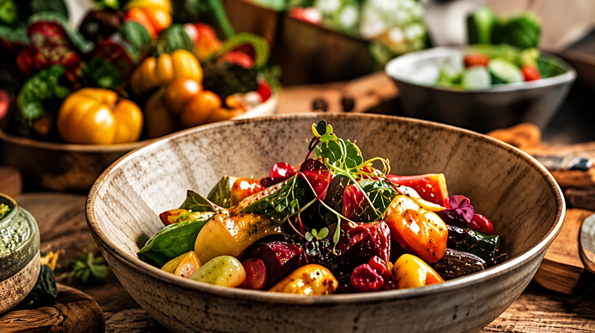
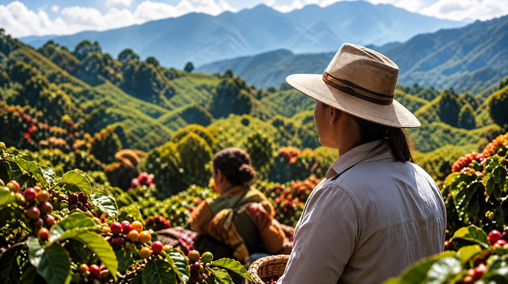

Año de formación
2013
GRUPO DE INVESTIGACIÓN
PATRIMONIO
PATRIMONIO
CULTURAL Y
GASTRONÓMICO
DE COLOMBIA
Investigación, cultura y territorio
para una gastronomía con identidad.
Ciudad
Bogotá D.C.
Colombia
Líder
Elizabeth
Araque Elaica
Clasificación
B
Institución
Fundación Universitaria
San Mateo
Área de conocimiento
Ciencias Sociales
Otras Ciencias Sociales
SOBRE NOSOTROS
Un grupo que investiga, preserva y proyecta nuestra identidad gastronómica
El grupo de investigación Patrimonio Cultural y Gastronómico de Colombia de la Fundación Universitaria San Mateo, formado en 2013, se centra en el estudio, rescate y documentación del patrimonio gastronómico colombiano, conectando la historia, las costumbres, las tradiciones, las recetas y el turismo como elementos de valor cultural, social y educativo.
Conoce más
LÍNEA DE INVESTIGACIÓN
Rescate del Patrimonio Cultural Gastronómico Colombiano
Esta línea de investigación aborda el estudio, la identificación, conservación y difusión del patrimonio gastronómico de Colombia, a través de procesos de investigación aplicada y etnográfica que integran la cultura, las tradiciones, la memoria y el territorio, para su reconocimiento y valoración como parte de la identidad nacional.
Conocer
Preservar
Valorar
Compartir
SUB-LÍNEA DE INVESTIGACIÓN

Cluster
Articulación de actores del sector gastronómico para fortalecer procesos de investigación, innovación y desarrollo territorial.

Desarrollo de Productos
(Rescate - Innovación)
Investigación y creación de productos gastronómicos que rescatan la tradición e incorporan elementos de innovación.

Emprendimiento
Gastronómico
Generación de conocimiento para el fortalecimiento de iniciativas y modelos de negocio en torno a la gastronomía.

Proyección Social
Transferencia de conocimiento a comunidades y territorios, contribuyendo al desarrollo social, cultural y turístico.
COLABORADORES
Conoce nuestro equipo
→
PUBLICACIONES DESTACADAS
Ver todas las publicaciones
→
Imagen
2024
Publicación
Título de la publicación
Imagen
2024
Publicación
Título de la publicación
Imagen
2023
Publicación
Título de la publicación
Imagen
2023
Publicación
Título de la publicación
Imagen
2022
Publicación
Título de la publicación
Imagen
2022
Publicación